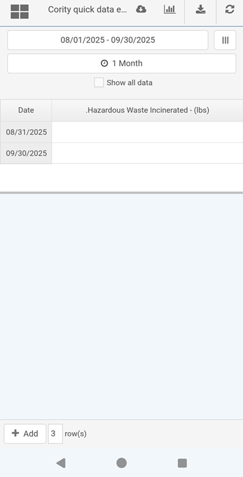
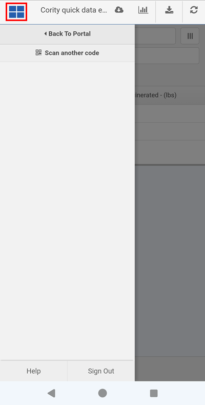

You can enter data on a Quick Entry Page, accessed by scanning a QR code. For example, you can scan a QR code and be taken to a quick entry panel that is pre-filtered for an asset, where you can then enter data. You can then navigate back to the portal after entering data or continue scanning QR codes to enter more data.
For information on generating QR codes, see Generate QR Codes.
To enter data from a Quick Entry QR code:
Scan a QR code that has been configured for the Portal page. 
The quick entry panel will open, filtered for the requirement(s) and current date.
Enter any data and click Save.
To continue entering data, click the menu button at the top left of the screen and select Scan another QR code.
Your device’s camera will open to allow you to scan another code.
To navigate back to the portal, click the menu button at the top left of the screen and select Back To Portal. 
If a page was specified during the QR code creation, you will navigate to that page. Otherwise, you will be taken to the last page you visited.